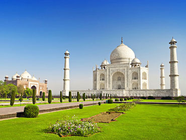
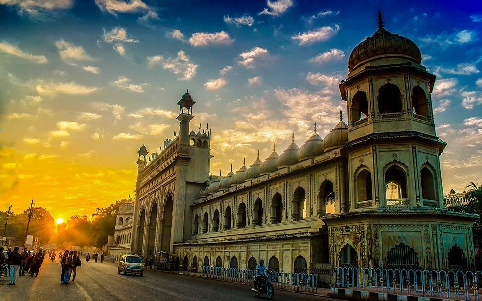

1.Agra-"The city of Taj Mahal, the monument of eternal love"
Agra is one of the most populous cities in Uttar Pradesh and 24th most populous city in India. With its long and rich history, it is no wonder that Agra forms part of the popular Golden Triangle Circuit for tourists along with Delhi and Jaipur. It is also a part of the Uttar Pradesh Heritage Arc including Varanasi and Lucknow. History fanatics and architecture buffs are sure to have a ball here with the sheer expanse of the Mughal art and culture on display.
Ideal duration: 1-2 days
Best Time: Oct-Mar
PLACES TO VISIT IN UTTAR PRADESH
😘

LOCATION
video
👌

location
video
2.Lucknow
Nestled on the banks of river Gomti, Lucknow is the capital and the largest city of Uttar Pradesh. Famed for its history, culture, and architecture, the place attracts millions of vacationers every year. The city is divided into two parts by centrally-located Rumi Darwaza that is a Mughal Gateway. The old Lucknow welcomes you with bustling streets, Mughlai delicacies eateries, and numerous outlets where you can find Chickankari clothes. When it comes to New Lucknow, expect to see the contemporary side of the city with high-rise buildings, parks, shopping malls, and other elements to complete your experience. So, if you want to visit the best tourist places in Uttar Pradesh, don’t forget to spend some days in Lucknow.
Major attractions: Bara Imambara, Dr. Ambedkar Park, British Residency, Chhota Imambara, Lucknow Zoo, Hazratganj
🥰

location
video
3.Varanasi-"The Spiritual Capital of India"
World's oldest living city, Varanasi - also known as Kashi (City of Life) and Benaras, is the spiritual capital of India. It is one of Hinduism's seven holy cities. The old city of Varanasi lies along the western banks of the Ganges, spread across a labyrinth of narrow galis. Be prepared to walk on foot and encounter some holy cows! Temples at almost every turn engulf Varanasi but the Kashi Vishwanath Temple is the most visited and the oldest of the lot. Benaras is known as the city of Lord Shiva for a reason, and rightfully so.
Varanasi is considered an auspicious place to die, as it is believed to grant moksha or liberation from the cycle of life and death.
Ideal duration: 2-3 days
Best Time: October - March
🤩
LOCATION
video
4.Vrindavan-"Lord Krishna's childhood abode"
One of the oldest cities on the banks of Yamuna, Vrindavan is considered to be one of the most important places of pilgrimage for the devotees of Krishna. It is said that Lord Krishna had spent his childhood in Vrindavan. The name of the city has been derived from Vrinda (meaning basil) and van (meaning grove) which perhaps refer to the two small groves at Nidhivan and Seva Kunj. Since Vrindavan is considered to be a sacred place, a large number of people come here to abandon their worldly life.
Ideal duration: 1-2 days
Best Time: Oct-Mar
🫡
LOCATION
video
5.Allahabad-"Prayaga- The city of offerings"
Allahabad, now officially known as Prayagraj, is a city located in the Indian state of Uttar Pradesh. Reminiscent of all that is spiritual and sacred in Hinduism, Allahabad is famous for Triveni Sangam or the meeting point of three rivers - the Ganga, the Yamuna, and the Saraswati. Built on the site of the ancient town of Prayag, Allahabad has, since time immemorial, held the largest Hindu gathering on the banks of the Sangam - the Maha Kumbh Mela. While the Sangam city is often passed over for more travel-friendly cities, there is a lot to Allahabad besides just its religion.
Ideal duration: 1-2 days
Best Time: Oct-Mar
😳
LOCATION
video
6.Sarnath-"One of the four holiest places to the Buddhists"
A quiet and spiritual town set amidst the otherwise densely populated state of Uttar Pradesh, Sarnath is a city of historical marvel with numerous Buddhist stupas, museums, excavated ancient sites and beautiful temples that prove to be a source of immense wonder and astonishment to tourists due to their mystical and serene setting. Being just 10 kms from Varanasi, Sarnath is often flocked with devotees is the perfect pilgrimage site for Buddhists, Jains and Hindus, alike.
Ideal duration: 1 day
Best Time: Oct-Mar
😍
LOCATION
video
7.Mathura-"The hometown of Lord Krishna"
One of Hinduism's seven sacred cities, Mathura is the birthplace of the very beloved Lord Krishna. Located in the state of Uttar Pradesh, Mathura and Vrindavan are often considered twin cities (located only 10km away from each other). Mathura is a small town dotted with temples from various ages and attracts a horde of pilgrims from all over the world.
Ideal duration: 1-2 days
Best Time: Oct-Mar
😁
video
8.Fatehpur Sikri-"The Pride of Mughal Empire"
A unique blend of architectural excellence, as well as religious beliefs - sums up Fatehpur Sikri. It was built by Akbar to honour Sheikh Salim Chisti, whose prediction of the birth of a Mughal heir came true while Akbar was visiting the then city of Sikri. In honour of the prophecy, Akbar built this city and Jama Masjid, a stunning mosque which is still in use today. He also undertook the construction of three palaces for each of his favourite wives, one a Hindu, one a Muslim and one a Christian. An Indo-Islamic Masterpiece, Fatehpur Sikri look its resplendent best during sunset.
Built In : 1571
Time Required : 1 day
Established By : Emperor Akbar
😍
LOCATION
video
9.Vindhyachal
Vindhyachal is a famous Hindu pilgrimage spot closer to Mirzapur and Varanasi and has several temples in the vicinity with their own interesting stories. This town is situated on the banks of holy river Ganga and people come here to take a dip into it to pray to Goddess Ganga.
The town also sees countless devotees that come here to perform the trikona parikrama which covers three most important temples Vindhyavasini, Ashtabhuja and Kali khoh temples. There is a huge crowd of pilgrims here, all year round and especially during the Navratra when the whole town is decorated with diyas and flowers and hymn of holy chants.
Ideal duration: 1 day
Best Time: Oct-Mar
😍

LOCATION
video
10. Chitrakoot-"The hill of many wonders"
Chitrakoot, a small town situated in the north Vindhyan range, is located over the districts of Chitrakoot in Uttar Pradesh and Satna in Madhya Pradesh. It holds great importance according to Hindu mythology and the epic Ramayana. Legends have it that Chitrakoot was the place where Lord Rama, his wife Sita and his brother Lakshmana stayed for eleven and half of their fourteen years of exile making it a reverred site among pilgrims.
Chitrakoot is also the place where Goswami Tulsidas, author of 'The Ramcharitmanas', spent many years of his life. There are many lively fairs which are organized on different occasions and festivals. Not many know that Chitrakoot is also home to the only university in the world specially made for the differently-abled, Jagadguru Rambhadracharya Handicapped University.
Thus, Chitrakoot is rightly called the Place of Many Wonders!
Ideal duration: 1 day
Best Time: Jul-Mar
😍
LOCATION
video
11.Ayodhya-"The birthplace of Lord Rama"
Ayodhya, located on the banks of river Sarayu in Uttar Pradesh, is one of the seven sacred cities for Hindus. Ayodhya plays a critical role in the Hindu epic of Ramayana as it is believed to be the birthplace of Lord Rama. This religious town is also the birthplace of four of Jainism's 24 Tirthankaras (religious teachers), beckoning tourists with its serene ghats.
With monkeys galore, the buzz of the visiting tourists, and a general spiritual aura, Ayodhya has been surrounded by controversy since about a decade now. It is the site of the 1992 Indian riots related to the Babri Masjid fiasco. The mosque, which was allegedly built on Ram Janmabhoomi Temple, became the bone of contention between Hindus and Muslims. In 2005, Ayodhya witnessed a terrorist attack at the site of Ramlalla Temple.
Despite the controversy, Ayodhya has so much colour and spirituality to see for its tourists and has emerged as a significant spiritual centre. The land of multi-faith temples, the traffic-free streets of Ayodhya are intriguing enough in itself to warrant a visit.
Ideal duration: 1 day
Best Time: Oct-Mar
😍

LOCATION
video
12.Jhansi-"City of Rani Laxmi Bai"
The city of Jhansi in Uttar Pradesh is a definite addition to every history buff or traveller who sets foot in this state. Sitting at the very south in the Bundelkhand region and built on the banks of the Betwa and Pahunch rivers, Jhansi is popular as the place where Rani Laxmi Bai, who is also referred to as “Jhansi Ki Rani”, lived and reigned.
Jhansi gets its name from the Jhansi Fort built by Raja Bir Singh Deo who named it so as the rulers could only see a shadow atop a distant hill when gazing at the fort. The historical city was also the seat of the Chandela Dynasties power. Jhansi was originally known as Balwantnagar, which was a walled city built around a fort.
These facts and the variety of monuments and essential landmarks down to the streets of the city show that Jhansi has a string of historical evidence which is dug deep into its roots and is one of the main reasons individuals are drawn to this city.
Ideal duration: 1-2 days
Best Time: November - March
😍
LOCATION
video
13.Hastinapur-"The seat of Kauravas"
Hastinapur is an ancient town which was the centre to the glorious tales of the epic Mahabharata. Situated on the banks of Ganga near Meerut in UP, Hastinapur is also the birth place of three Jain Teerthankara, and it has become an important centre of pilgrimage for the Jains.
It was the capital of Kauravas and was ruled by the Pandavas after winning the Mahabharata. From that era to this, the city has come along a long way but it is still known as the town of Mahabharata. It is fascinating in its own way and as it has lived through ages, it has also kept the spirit of mythology alive. Being an important part of the epic, every nook and corner of the city has been a part of it in some way and thus the locals have fascinating stories to share.
Ideal duration: 1 day
Best Time: Oct-Mar
😍

LOCATION
video
14.Noida-"The city of transformations"
A part of the National Capital Region, Noida, with the inauguration of Budhh international circuit for the formula one racing, Sunburn arena where international artists perform, and upcoming projects of one of the tallest buildings in North India. Noida is just busy running towards faster growth. Noida is a short name for New Okhla Industrial Development Authority.
This beautifully planned city has something for everyone, be it parks, amazing street food, posh restaurants, shopping malls, street-side shopping options, amusement parks, pubs and discotheques or sports complexes. Talking about the climate, it either has really hot summers or really cold winters but between August till November, the weather is mild. People in Noida are usually big foodies and are lively.
Ideal duration: 1 day
Best Time: September-December, February-March
😍

LOCATION
video
15.Kanpur-"Leather City of the World, Manchester of India"
Situated on the banks of Ganges, Kanpur is one of the largest cities of Uttar Pradesh, and the industrial capital of the state known for its chemical, textile and leather industries. Known for its immense human resource, it has also earned a reputation as the eleventh most populous agglomeration in India. Kanpur has established itself in the pages of history, being a part of major dynasties and an important British garrison town until 1947.
The bloody tale of the capture of Kanpur by various rulers is recorded all over the city in different architectures, museums, books and by the oral legends. Kanpur was believed to have been established by king Hindu Singh Chandel of Sachendi, initially naming it as 'Kanhiyapur' because it was said to be founded on the birthday of the Hindu god, Lord Krishna. Later on, in its way to acquire the name ‘Kanpur’, it was known as Kanhapur, Caunpoore and Cawnpore. Many old texts suggest that it derived its name from the legendary character of Mahabharata, Karna, as it was called Karnapur too.
Ideal duration: 2-3 days
Best Time: October-March
😍
LOCATION
video
16.Aligarh-"India's Education Mecca"
Nestled in the populous state of Uttar Pradesh, Aligarh has grown as a prominent educational and commercial centre in Northern India. Known as Kol or Koli in the ancient times, the city is said to have been founded by the Dor Rajputs in 372 AD and has housed the famous Aligarh Muslim University since 1875. Aligarh is also famous for its lock industry.
Aligarh, a city that hasn't received a lot of tourist attention in the past, has but witnessed several important events in history. The region was under a lot of dynasties such as the Lodi Dynasty, the Mughals and the British East India Company.
Ideal duration: 2-3 days
Best Time: October - February
😍
LOCATION
video
17.Barsana-"The Birthplace of Radha Rani"
Barsana is a place of historical significance which is located in the district of Mathura at Uttar Pradesh, India. The town is nicknamed as the Birthplace of Radha Rani as the Hindu goddess Radha (Lord Krishna's consort) was born in this city. Barsana is also popular for the grand celebration performed during the Holi festival, known as the Lathmar Holi.
Barsana is also called as Vrishabhanupura, named after the founder Vrishabhanu Maharaj, who is the father of Shri Radha. The town has many places of visit which are of religious and ancient significance. It is surrounded by many places where Goddess Radha spent her times with her Sakhis and Lord Krishna. There are many religious temples dedicated to Goddess Radha and Shri Krishna. The hills, ponds and many other places speak of the ways Radha spent time in Barsana.
The beautiful city is situated around two hills, namely, Brahma Hill and Vishnu Hill, which have four peaks in the region of Braj. According to popular beliefs, these peaks are the heads of Lord Brahma. Each of these peaks has a temple which are of religious significance.
Ideal duration: 1-2 days
Best Time: October - March
😍
LOCATION
video
18.Shravasti-"One of the Six Largest Cities of Gautama Buddha's Era"
A sacred land that holds importance to the Hindus, Jains and Buddhists alike, Sravasti is a cultural paradise, that lies in the heart of Uttar Pradesh. Monasteries from Thailand, Tibet and Korea bring to life every architect's dream. A city that holds the ancient Bodhi Vriksh (tree) is not unfamiliar with the legends and myths of Ramayana. Shravasti is also the birthplace of Tirthankar - the founder of Jainism.
Thus, this region holds great importance for the devotees of three religions, who annually visit in huge numbers. Shravasti which comes from the words, "Sabbam atthi", stands for peace and prosperity, which is reinforced by each ring of the Japanese World Peace Bell.
The epic Ramayana, states that it is a city that was created by Lord Ram, when he divided the kingdom of Kosala, into Shravasti and Kushavati. While Shravasti was to be ruled by Lav, Lord Ram's son, Kusha, the other son was made the ruler of Kushavati. Another epic, Mahabharata, traces the history of this city back to King Shravasta. Shravasti also holds great spiritual significance in Buddhism and Jainism. It is believed that the region houses many relics and architectures from the era of Gautam Buddha and Mahaveer.
Ideal duration: 2-3 days
Best Time: September - November
BAZAR AND MARKETS
😍
LOCATION
video
1.Rajan Silk Market
We all know that Varanasi is famous for Benarasi sarees. One can get a wide variety and high-quality Benarasi sarees from the markets. But some markets are specialized for Benarasi sarees. Rajan Silk Market is the only place where one can get designer and trendy Benarasi sarees and that too at a wholesale price. Benarasi saree is an essential piece of clothing that every woman loves to own, but they come at a very high-price in other cities, which you can get here at a reasonable price. They are a pioneer of the Benarasi Sarees wholesale market. Apart from sarees, one can also get Banarasi dupattas, which is very much in trend these days.
Location: Varanasi, Uttar Pradesh
Timings: 10.00M-9.00PM
What to buy: Benarasi sarees, suit, and dupattas
😍
LOCATION
video
2.Dal Mandi Market
It is counted as one of the most popular places in Varanasi that are reputed for selling and having shopped for wholesale garments. If you are looking for high-quality stuff at a reasonable price, then this market would be the best for you. Most of the garments that are sold by them have superior designs and quality. One can get beautiful and designer salwar suits both in stitched and unstitched form especially from this market. This is even the largest market in the entire city of Varanasi.
Location: Godaulia, Varanasi, Uttar Pradesh
Timings: 10.00 AM-8.30 PM
What to buy: Dress materials, sarees, and other clothing items
😍
LOCATION
video
3.Sadar Bazaar
Sadar Bazaar is one of the most famous markets for shopping in Agra which is situated near the Agra Cantt railway station. Everything ranging from handicrafts, sweets, garments to leather bags can be found here. Cafes such as Café Coffee Day too are situated near the market in addition to some delicious vegetarian as well as non-vegetarian food joints.
Things to buy: Since Agra is very famous for its leather products, do not forget to buy them from here. A store named Taj Leather World located in the market is reasonable and offers good quality products. If you want to buy ethnic clothing, footwear and accessories, you need to head out to the Sadar Bazaar!
Tips: Always bargain before making the final call.
Timings11:30 AM to 6 PM, Tuesday closed
😍
LOCATION
video
4.Kinari Bazaar
Kinari Bazaar is located near Jama Masjid of Agra. It is the wholesale market of the city with a great history which makes it one of the top places for shopping in Agra.
Things to Buy: Handicrafts, along with marble, glassware, rugs, leather and textiles.
Tips: Try to get yourself a good bargain in the wholesale and get good quality products at a reasonable price.
Timings: 11 AM to 9 PM, Tuesday closed
😍
LOCATION
video
5.Shahganj Bazaar
This local market situated in Agra has grown over the years giving out some good quality products.
Things to Buy: Almost everything can be found out in the market from furniture to clothes and ladies bags to shoes. It also has one of the best vegetable markets in the city.
Tips: Do not give any price quoted. Bargain to some extent. Also, take care of your belongings.
😍
LOCATION
video
6.Shoe Market
This market is located in the area called Hing Ki Mandi. It is a very famous shoe market in the city.
Things to Buy: Since Agra is popular for its footwear industry, one can get a good pair of shoes at the market.
Tips: Since the market is situated in a congested area, it is advisable not to drive your vehicle there. Instead, use the public transport. The market is visited by wholesalers to buy the products in wholesale meaning that one can get quite a good deal at the market.
Timings: 10 AM to 4 PM
FOOD ITEMS
😍
LOCATION
video
1.Panchi Petha, Hari Parwat Crossing – Sweet Tooth
Petha is the most prominent name that epitomizes Agra. Since the childhood days, Agra’s petha has remained the mouthwatering fantasy for me, and a lot of kids just like me! So, if you aren’t sure about the most authentic shop selling pethas head to Panchi Petha at Hari Parwat crossing Kesari. It’s really tough finding the genuine petha shop in Agra where other petha shop claims themselves to be the real Panchi Petha.
Other popular shops selling delicious pethas in Agra are Bhimsain Baidyanath and Pracheen Petha. If you are looking for more options other than pethas then head to Bikanervala, Bhagat Halwai, Deviram, and Gopaldas. Brijwasi is another popular sweet selling shop in Agra.
😍
LOCATION
video
2.Ram Babu Parantha Bhandar, Gopal Bazar – Hearty Meals
Ram Babu Parantha Bhandar is where people go to savor the famous street food in Agra. The local food joint in Gopal Bazar gained popularity after being discovered by Jiggs Kalra in the early 1990s. They have another branch, which is run by Ram Babu’s brother Harishankar Khandelwal at National Highway No. 1, next to Sikandra.
What’s special: Deep fried piping hot paranthas with tangy pickles and mashed veggies
😍
LOCATION
video
3.Mama Chicken a.k.a. Mama Frankie, Sadar Bazar – Lip Smacking
Mama Chicken Mama Franky, run by the father-son duo of Himanshu and Rahul Sachdeva at Sadar Bazar in the Cantonment, is another hot favorite place for the locals. This place is the answer to all your cravings for lip-smacking food in the streets of Agra. Known for its classical chicken kebab wraps, mutton, and chicken seekh kebabs, this is where you head to after dark in Agra.
What’s special: Shaami kebabs, shawarmas and kebab wraps
😍
LOCATION
video
4.Chaat Gali, Sadar Bazar – Mouth Watering Dishes
Sadar Bazaar is the place crowded by local street food stalls and vendors as the light begins to fade. Being more specific, if you want to take a tour of the best of the famous street food in Agra, head to Chaat Gali. This place is thronged with plenty of street food shops. And there in the crammed bylanes of Sadar Bazaar are the famous Agra Chat House and Shri Agrawal Chat House recognized for gol-gappas and chats.
The thick and creamy yogurt here in the stalls of the chat gali is worth a mention. The chutney and spicy waters at Agrawal’s are also worth a mention.
What’s special: Kelaji’s famous bhel puri, Kelaji and Panditji’s rabdiwali kulfi
😍
LOCATION
video
5.Deviram Sweets, Pratap Pura – Tasty Sweets
Start your morning with the legendary bedai – one of the street food in Agra, and along with the memorable aloo-subzi here. Sum it up with crispy jalebis and you have your day made. There is Agra special food in the narrow street of the city, and it very well tends to different types of taste buds.
What’s special: Kachori, samosas, badam milk, and lassi
😍
LOCATION
video
6.L-14 – For Exotic Cuisines
Of all the best restaurants in Lucknow, if there is one place that offers the most exceptional and exotic cuisines on a platter, it is the all day fine-dining restaurant – L-14. This popular place is situated on the 14th floor of Hotel Renaissance is widely known as a foodie’s paradise amongst the locals. Irrespective of why you’re in the city, you simply cannot afford to miss a visit to this restaurant. It is one of the best non veg restaurants in Lucknow.
Special For: Indian, Continental, Chinese, Asian, and Thai cuisines
Timings: 6:30 AM to 10:30 AM, 12:30 PM to 3:00 PM, and 7:30 PM to 11:00 PM
Cost For Two: INR 2,000
Zomato Rating: 4.3/5
Location: Vipin Khand, Gomti Nagar, 14th Floor, Renaissance Lucknow Hotel, Lucknow
😍
LOCATION
video
7.Oudhyana – A Royal Dining Experience
Located in Gomti Nagar in Vivanta by Taj, Oudhyana is definitely one of the best restaurants in Lucknow for having the most royal dining experience. This restaurant not only offers authentic local cuisines, but also makes sure you relish them like one. While it might seem a little expensive, believe is, it is worth every dime. It is one of the best buffet restaurants in Lucknow.
Special For: Mughlai and Lucknowi cuisines
Timings: 12:30 PM to 3:00 PM, and 7:30 PM to 11:30 PM
Cost For Two: INR 2,500
Zomato Rating: 4.1/5
Location: Vivanta by Taj – Gomti Nagar, Lucknow
😍
LOCATION
video
8.Falaknuma Rooftop Restaurant – A Marvelous Place
Thanks to the classic rooftop restaurants in Lucknow like Falaknuma, the city has marvelous places to visit for a tourist cum foodie like you. Live Ghazal music, finger-licking good Awadhi cuisines, and a gorgeous view of the city like none other are some of the major highlights of this place that have the magic of making your evening extra special.
Special For: North Indian and Lucknowi cuisines
Timings: 1:00 PM to 3:00 PM, and 8:00 PM to 11:30 PM
Cost For Two: INR 1,600
Zomato Rating: 3.8/5
Location: Hotel Clarks Avadh, 8, M.G. Marg, Hazratganj, Lucknow